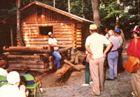
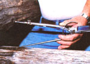
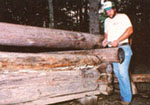
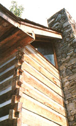
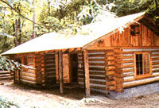
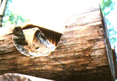
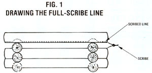
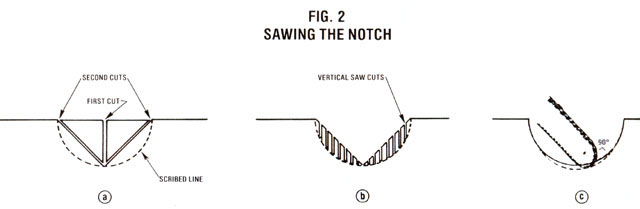

If you haven't visited MOTHER's Eco-Village, you can "attend" one of our classes right here!
The folks who participated in last summer's mini-seminar series at our Ecological Research Center had the chance to take more than a dozen Show-How classes, including earthsheltered housing . . . biodynamic/French intensive gardening . . . wood-gas generation . . . solar water heater construction . . . beekeeping . . . and more.
Well, we wanted to share a bit of that experience with those of you who couldn't make it to our western North Carolina EcoVillage's 1982 session. And we decided that this time, rather than simply tell you just a little about each of the classes that were offered, we might be able to give you a better feel for what went on-and pass along a good bit of useful how-to, as well - by actually reporting the content of just one of our miniseminars. Furthermore, to make the piece all the more informative, we decided to present a Show-How that deals with a topic we haven't recently covered in the magazine . . . log construction.
So imagine, if you will, that you're standing in a small hollow beside a partly built square grid of cut and notched logs, which rests next to the completed log home (built by MOTHER staffers and used as a crafts workshop) shown in one of the accompanying photos. In the background stands a simple waterwheel, while a short distance behind that, the more imposing dam of MOTHER's pondwith its hydroelectric generator-looms overhead. You're not really thinking about those two sources of water power just now, however, because right in front of you is a jovial-looking fellow who leans against the unfinished log structure . . . waits placidly for the latecomers to get settled . . . and then begins.
Hi! I'm Rick Compton, and this is the Log Construction Show-How. We've got three examples of this building technique right here on the property. First off, there's the craft shop right behind me. We here at the EcoVillage built it using the "chink" method . . . see the white mortar chinking between all those logs? I'm leaning on the second example, an in-process model being built by the Scandinavian, or "full scribe", method. And on up the hill you can see the last example, a log home that was put up from a prefabricated kit. The kit building's got squared-off logs with splines that fit together sort of like those on tongue-and-groove flooring.
I'm going to deal mainly with the first two types of log buildings, because I hap pen to think that-if you've got the time-one of these is the way to go. After all, log kits are relatively expensive. You can pay around $10,000 for the materials needed to make a 1,000-square-foot "packaged" house and-if you go by the fairly accurate rule of thumb that it costs four times the price of a kit to actually finish the dwelling-up to $40,000 for your completed home.
In addition, I think round logs provide better insulation than do squared-off ones. Forest Service studies have shown that when you cut the sides off the logs, slicing through their growth rings and disrupting some of their cellular structure, you significantly reduce their insulating value. Good round timbers, on the other hand, produce walls that retain heat pretty well. For instance, poplar-according to the U.S. Forest Service-has an R-factor of 1.13 per inch. So if you're building with 10"-thick poplar logs and stuff your long notches (which I'm going to tell you about in just a minute) or chinks with an equivalent amount of fiberglass insulation, your walls will have an R-factor of 11.3.
OK, if you're going to build your own log house, first you'll have to lay a better and larger foundation than you'd need for a conventional home, because a log wall is typically four times as heavy as a frame one. Poplar, to be specific, weighs 32 pounds per cubic foot . . . oak weighs 47 pounds per cubic foot . . . and white pine weighs 27 pounds per cubic foot. The county regulations around here require a foundation that's 8" thick and 16" wide, but we gave this craft cabin one that's 12" thick and 20" wide. What's more, we beefed it up with 1/2" reinforcing rod running around the perimeter. (We also pinned the corners of the bottom logs to the stem wall with 3/8" hot-rolled steel pins-cut to length from 20-foot sections-to keep the building from shifting sideways.)
It took 75 logs, each 25 feet long, to make the craft shop. As you can imagine, toting those timbers was quite a task, so we made a two-wheeled hauling rig-it looks like the bottom half of a capital "H"-out of 5" steel pipe. We straddled it over some logs, used a winch to pick the wood up, and pulled it along with a tractor. The device cost us about $250 to make, and we think it's a useful thing to have if you're going to haul a lot of logs.
When it came time to peel the trees (which isn't always necessary or desirable, as I'll explain later), we started with two guys using drawknives. It took the pair of them about 45 minutes to skin each log . . . and after two days of that work, both men threatened to quit. So we made three different types of log-peelers in the shop and tried each of those. The one that works best is nothing but an old truck spring that's been sharpened on one end and welded to a piece of pipe on the other. The whole thing's attached to a hoe handle. You could make one for $4.00 or $5.00 (store-bought peelers cost about $48). With this tool, one person can skin a round in about 15 minutes. The implement is heavy enough to enable a worker to push it through small knots on a log . . . and if the front edge starts to cut in too deep, he or she can just lean back on the handle, and it'll come up.
The next major task was getting the logs up on the building. We placed the first two courses by hand, but since those timbers weigh 500 to 600 pounds apiece, the job led to a lot of sore backs. So we tried propping poles against the cabin and rolling the logs up. That worked well, but we could do it only on one side of the building, since there were trees on two other sides and a creek on the fourth. To solve the problem, we ran a cable between two trees, tensioned it with a turnbuckle . . . then used a block and tackle hanging from a snatch block on the cable to winch the logs up. (I do have to admit that, when it came time to place the two 52-foot logs that run along the roof line on the cabin there, we cheated . . . and used a tractor.)
I figure you'd need about the same amount of time to build a house by either the chink or the full-scribe method . . . because although it'd take you longer to fit the logs if you went the full-scribe route, you wouldn't have to chink the gaps afterward.
However, you must have a supply of good logs to use the full-scribe method. Some of the rounds on that craft shop are 14" across at one end but only 8" across at the other. That means they're tapering 6 inches from tip to tip. Well, you can use logs like that when you're going to fill the gaps between them with chinking-as we did on the shop-but you can't do it if you're going to build a tight-fitting Scandinavian-style building in which the logs fit right on top of each other. (Well, you could do it, but it'd be clanged difficult.) Ideally, the logs used in a full-scribe project shouldn't taper more than a couple of inches from butt to tip. In fact, we built our cabin in the chink style simply because we didn't have enough good logs around to do it the tight-fit way. I'd rather have used the full-scribe method. After all, there're fewer gaps where air can get in if the logs are resting right on each other, so fullscribe construction should produce a more nearly airtight building.
At any rate, I'm going to tell you how to cut your timbers for the full-scribe procedure and then explain how to modify that technique to suit the chink-style lay-up you see in the craft shop. First, you'll need a scribe, which consists of a set of dividers with bubble levels-set for the two horizontal axes-on the back.
To begin, center the log you're going to cut so it's above and parallel to the one it's supposed to fit over. Then find the maximum gap between those two logs, and set that interval plus 1/4 inch on your scribe. Now, holding the tool with both bubbles set level, trace-drawing as you go-all the way along the top log. Your scribe will, of course, rise in a semicircle over each of the two log ends your round is going to rest upon. [EDITOR'S NOTE: Ricky demonstrated this to the class. Since we can't do that "live"; we've illustrated the procedure in Fig. 1.]
Scribe both sides of your log in this fashion. Next, you've got to cut out two round notches across it (to accommodate those right-angled log ends) and one V-notch going down its length. To form the round notches, get a chain saw with a high chain speed, saw straight down to the center of the notch, and then cut in to that point from each side. [See Fig. 2a.] That'll get rid of most of the wood.
Now, make a series of vertical cuts [as shown in Fig. 2b]-each only the width of the saw's chain-working from the center out. Use the tip of the bar, and let it ride in a little to make the curve bowl-shaped. When you're done, you should be able to set a straightedge across the notch (at right angles to the log) and still slip your fingers underneath it.
Finally, you can smooth out the sides by running your saw back and forth at 90° to the curve until the cut is as smooth as it would be if done with a wood chisel. [See Fig. 2c.] It may take you an hour to shape your first notch this way, but once you get the hang of it, you can make one in five minutes or so.
After finishing the second notch, use your chain saw to cut out the V-shaped groove that runs all the way along the log-between notchesand helps "fit" it to the timber beneath it. You'll stuff this gap with fiberglass insulation when you set the log in place.
That's the way to cut a tight-fitting fullscribe timber. To mark one for the chinking method, you do pretty much the same thing . . . except that you won't need to make the lengthwise V-notch, the scribe interval doesn't have to be quite so exact, and you may have to compensate for the log's taper. For instance, if you're working on a log that's 14" in diameter at the butt and 11" at the tip, first put the smaller end on a 3" block of wood so it'll lie level on the house. Then set your scribe at a little less than half of the bigger diameter-say, 6-3/4 inches-and simply draw the double-humped notch lines at each end of the log. Since the skinny tip has been lifted up 3 inches already, your scribe's curved line will go up only 3-3/4 inches on that end . . . and that'll keep the log level when you finally do roll it in place. (There are other ways to cut this sort of log, of course, but that's about the easiest I've found.)
If you build a house by the chink style, you're going to have to wait awhile-in fact, the longer the better-for it to settle before you can move in. We cut the logs for our cabin in January 1981, put the building up that May, and chinked and finished the place a year later! You could, if you'd rather, just stack the cut logs up in ricks for a year or so before building with them. In that case, you'd want to leave the bark on so they could all dry evenly . . . and treat the wood somehow to stop bark bugs from chewing it up.
If you build with the full-scribe method, you don't have to wait a year. You can move in right away. But you will need to allow 3/4 inch of clearance per vertical foot for settling. That means you'll have to leave gaps above all your doorways and window openings-you can cover them with sliding trim boards-to make up for the fact that the walls are going to sink. You'll also want to cut notches in the log ends at each side of your doorways and windows, set freestanding 2 X 4's inside them, and fasten your door frame to those boards to avoid trouble as the house settles. (Be sure to leave gaps above the 2 X 4's, as well.)
In fact, you'll have to remember to allow for settling in a lot of places: over your internal walls . . . above your stairways . . . and around your chimney flashing. Why, the funniest thing I've seen in a long time is a log home that had "floating flashing" a few feet off the roof. The owner fastened the metal to the smokestack without considering that his roof was going to sink!
You'll have to watch how you do your plumbing, too. In fact, don't run any plumbing through your home's log walls . . . because walls move, but pipes don't. Besides, if you set your pipes in there and something breaks someday, how can you get at it to fix it? That won't be as easy as punching and patching a hole in drywall, I can tell you that.
So let your plumbing run up along an inside, nonlog wall. Furthermore, if you're going to install plumbing in your home's second floor, coil some copper lines to permit a bit of play as the house sinks, or put in slack-giving "sizzle" joints. And speaking of second floors, don't forget to allow for settling on your stairwells. We put our building's steps on casters so they can roll out a little as the place settles.
You can put your wiring within the log walls by drilling the holes and running the wires up as you go along. I'd try to avoid doing this, though, because-once again-it's going to be difficult getting in there to make repairs. It's an easier matter to run wires for light fixtures and such along the notches you'll be cutting for your door frames.
When you're putting up the walls, stop about every third course and check the height at all the corners to make sure you're going to come out even. Some buddies of mine once asked me to help them put a roof on their log home. When I got there, I found out that their ceiling line was off 10 inches! There's no way you're going to put a roof on that! This craft shop, on the other hand, has eight corners . . . but since we kept checking their height as we worked, they were all within 1 to 1-1/2 inches of being the same when we finished. Mind you, they aren't exactly equal, but with logs nothing is ever exact. It's all "close is good enough".
The chinking in this cabin is a sandwich of fiberglass insulation (we just stuffed in enough to match the R-factor of the logs) with metal lath strips on both sides, covered with a mortar-type mix. If you look around the cabin, you can see that there're places where the chinking's begun to pull loose. We'll have to do a second mortar layer to plug those gaps.
You'll also notice that big splits have formed in some of our poplar logs. Those cracks don't do any harm, but if you want to avoid them, dry your logs with the bark on before you put them up. That way they'll cure at an even rate. Once you peel them, though, the outside will dry quicker than the inside, causing splits.
After the second chinking's all done, we'll have to apply some kind of preservative to the logs to keep the bugs off. There're all sorts of products for doing that, and some of them are pretty wicked. You'll just have to pick one you think you can live with. (I use a liquid called Cabot's stain.) Basically, if you keep the bugs, sun, and water off your logs, they'll last just about forever. Studies have shown that, by itself, wood naturally deteriorates at a rate of only 1/4 inch per hundred years.
As for how much it costs . . . we've got about $1,800 to $2,000 in materials-including the concrete floor, the trapdoor, the tin on the roof; and the lath in the chinks-in this 724-square-foot craft shop. It might take $5,000 to finish it all the way . . . adding the cabinets and plumbing and all that would make it a home.
And how long did it take us to build it? Well, we had two, sometimes three, guys working on the structure. It took us about two weeks to cut and move the logs . . . about six weeks to peel, notch, and put 'em up . . . and another week to chink it. All told, we spent about ten weeks building the basic log structure itself, getting five to eight logs up and on per day. I'd say one person working alone would need ten to twelve months to put up the same size house, from foundation to finishing work.
Of course, a builder might make the job easier by finding an abandoned log house or barn, tearing it down piece by piece, moving it, and putting it back together. If you can get a structure like that-in basically good shape-for around $1,000, I'd say take it. Then you could replace the roof and do other repairs for a few thousand dollars and have yourself a home.
As for books I'd recommend . . . well, you can learn something from almost any of them, but the best by far is B. Allan Mackie's Building With Logs. It does cover the full-scribe-not the chinking-method of building . . . but if you can understand how to put up a structure the fullscribe way, you'll find the chinking method a breeze.
EDITOR'S NOTE: You can buy equipment for the full-scribe method of log construction from Heather Power Tools, Dept. TMEN, 807 Fort Avenue, Prince George, British Columbia, Canada V2L. 3H5. The scribe alone costs $55, and the bubbles alone are $49 . . . or you can purchase both for $102. (Please add $2.00 shipping and handling per order.) The firm's catalog is free.
You can also obtain B. Allan Mackie's Building With Logs for $12 (plus $2.00 for shipping and handling) from the same address.
|
 |
 |
 |
|
 |
 |
 |
|
 |
 |
|